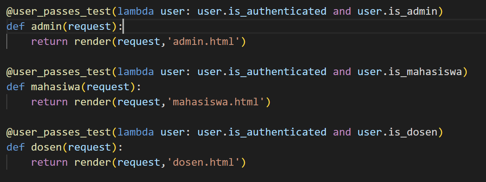

On this section i will focus on what i did on my project spesifically about how i write my code and what best practices that i use.
There is several best practices that we can use and aplly to our code to make the code better overall. On this page, i will give some of the best practices that i implement on my project sparql. I will also give the example of the code that "apply" those best practices themselves.
First, the Object Oriented Principle. As we can see from the above picture the code that i wrote is structured in a way that follows OO principles, with related functions grouped together in a class or module. The use of classes and methods, as well as the organization of the code into separate files, demonstrates an understanding of OO concepts.
Second, Separation of Concern. As we can see the code separates concerns by defining separate functions for specific tasks. For example, the register function handles the registration process, while the login_views function handles the login process. This separation of concerns makes the code easier to read, maintain, and test
Third, Dont repeat yourself Principle. We can also see that the code avoids repeating code blocks by defining reusable functions and using them wherever needed. For example, the login function is used to authenticate and log in users in the login_views function as well as in the register function.
Fourth, Reusability. Also the third principle is connected to this principle where we can reuse the code without repeating the code itself

Fifth, Single Responsibility Principle (SRP). As we can see the code applies SRP by defining functions that have a single responsibility. For example, the index function is responsible for rendering the homepage, while the admin function is responsible for rendering the admin page.